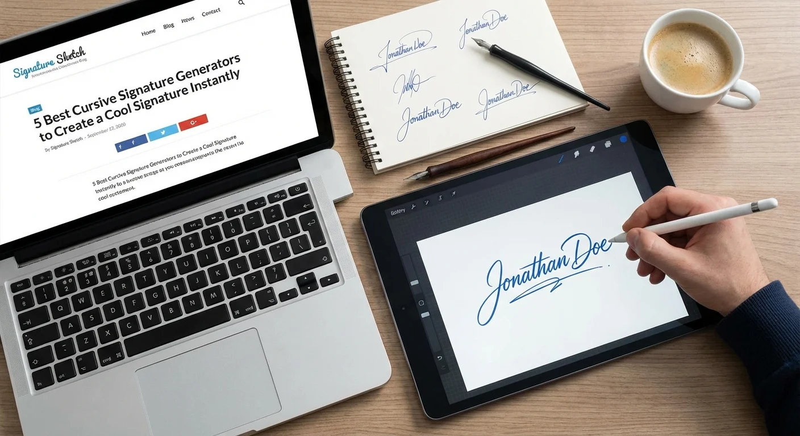

Your handwriting is terrible. You know it. Your doctor knows it. Your bank teller definitely knows it. But your signature still needs to look professional, confident, and uniquely yours. That is exactly what a cursive signature generator solves.
Whether you are signing a freelance contract, personalizing your email footer, or just tired of your signature looking like a toddler's crayon drawing, this guide will show you the best free tools to create a cool cursive signature in seconds.
We tested dozens of generators. Most are terrible (watermarks, forced sign-ups, ugly fonts). Here are the 5 that actually work.

What Makes a Good Cursive Signature?
Before we jump into the tools, let us define what separates a forgettable scribble from a signature that commands respect.
- Legibility: Your first and last initials should be recognizable. The rest can flow into artistic loops.
- Consistency: A good signature looks roughly the same every time you write it. Generators help you lock in a design.
- Speed: Real signatures are written fast. Slow, careful strokes look fake. The best generators mimic natural pen pressure.
- Uniqueness: It should not look like a standard computer font. Slight imperfections make it feel authentic.
The 5 Best Cursive Signature Generators (2026)
1. Signature Sketch (Our Pick)
Signature Sketch is a free, browser-based tool that gives you two ways to create a cursive signature:
- Type Mode: Enter your name and choose from multiple handwriting-style fonts. Adjust slant, weight, and size until it looks natural.
- Draw Mode: Use your mouse, trackpad, or touchscreen to draw freehand. The canvas captures pressure sensitivity, so your strokes have realistic thick-thin variation.
Why we rank it #1
- No watermark. Ever.
- No sign-up. Just open and create.
- Transparent PNG download. Your signature floats cleanly over any document.
- Color options. Black, blue, or custom colors.
- 100% local processing. Your signature data never leaves your browser.
2. MySignature.io
MySignature focuses on email signatures rather than document signing. It lets you type your name in a cursive font and embed it into an HTML email signature block with your job title, phone number, and social links.
- Best for: Email footers (Gmail, Outlook).
- Limitation: Free tier has limited templates. Not ideal for document signing.
3. FontMeme Signature Generator
FontMeme offers a large library of cursive and calligraphy fonts. You type your name, pick a font, and download the result as an image.
- Best for: Exploring many font styles quickly.
- Limitation: Output is a flat image (not always transparent). Limited customization beyond font choice.
4. Signaturely
Signaturely is a more business-oriented tool. It lets you draw or type a signature and insert it directly into documents via their platform.
- Best for: Users who need an all-in-one signing workflow.
- Limitation: Requires account creation. Free plan has document limits.
5. Canva (Signature Templates)
Canva is not a dedicated signature tool, but its text editor with script fonts can produce elegant cursive signatures. You can also add decorative elements like underlines or flourishes.
- Best for: Designers who want full creative control.
- Limitation: Overkill for a simple signature. Requires a Canva account.
Quick Comparison
| Tool | Free | No Sign-up | Transparent PNG | Draw + Type |
|---|---|---|---|---|
| Signature Sketch | ✅ | ✅ | ✅ | ✅ |
| MySignature.io | ⚠️ Limited | ❌ | ❌ | Type only |
| FontMeme | ✅ | ✅ | ⚠️ Sometimes | Type only |
| Signaturely | ⚠️ Limited | ❌ | ✅ | ✅ |
| Canva | ⚠️ Limited | ❌ | ✅ (Pro) | Type only |
How to Create Your Cursive Signature (Step-by-Step)
Let us walk through the fastest method using Signature Sketch.
Option A: Type Your Signature
- Go to Signature Sketch.
- Switch to Type mode.
- Enter your full name or initials.
- Browse the cursive font options. We recommend trying Brush Script, Dancing Script, or Great Vibes for an elegant look.
- Adjust the size and color (blue ink looks more authentic than black).
- Click Download PNG.
Option B: Draw Your Signature
- Switch to Draw mode.
- Sign your name on the canvas. Pro tip: Sign fast. Hesitation creates shaky, unnatural lines.
- If you have a touchscreen or tablet, use your finger or stylus for the most natural result.
- Not happy? Hit Clear and try again. Most people need 3-5 attempts to get a signature they love.
- Download as transparent PNG.
5 Tips for Designing a Cool Signature
Tip 1: Start with Your Initials
The most iconic signatures emphasize the first letter of each name. Make them larger and more decorative. The remaining letters can be simplified into a flowing line.
Tip 2: Add an Underline or Flourish
A simple underline or a looping tail on your last letter adds personality. It also makes the signature harder to forge because it adds a unique element.
Tip 3: Keep It Consistent
Once you find a design you like, practice it 10-20 times. A signature should be muscle memory, not a conscious effort. Using a generator helps you "lock in" a design you can replicate.
Tip 4: Use Blue Ink for Documents
As we explained in our Wet Blue Ink Signature Guide, blue ink signals originality. It distinguishes your signed document from a photocopy.
Tip 5: Less Is More
Resist the urge to make your signature overly complex. The most professional signatures are simple, fast, and confident. Think of it like a logo: clean beats complicated.
Where to Use Your Cursive Signature
Once you have created your signature, you can use it everywhere:
- Word Documents: Insert as an image. See our Word guide.
- Google Docs: Drag and drop the PNG. See our Google Docs guide.
- PDFs: Use any PDF reader's "Add Image" feature. See our PDF guide.
- Email Signatures: Add the image to your Gmail or Outlook signature settings.
- Canva & Design Tools: Upload the transparent PNG as a layer.
- Contracts & Invoices: Professional and legally valid for most business documents.
Frequently Asked Questions
Is a cursive signature required for legal documents?
No. There is no legal requirement for a signature to be in cursive. Any mark you make with the intent to sign is legally valid. However, cursive signatures are the cultural norm and look more professional.
What if I never learned cursive handwriting?
That is increasingly common. A signature generator solves this perfectly. Type your name, choose a cursive font you like, and use that as your official signature. Nobody will know the difference.
Can I use a generated signature on official documents?
Yes, for the vast majority of business documents. Under the US ESIGN Act and EU eIDAS regulation, electronic signatures are legally binding. Exceptions include wills, certain real estate deeds, and some government forms.
How do I make my signature look more realistic?
Use the Draw mode instead of Type. Sign quickly (slow = shaky). Use a touchscreen if possible. Choose blue ink. And always download as transparent PNG.
Create Your Cursive Signature
Type or draw. Choose your style. Download in seconds.
Start Drawing Now